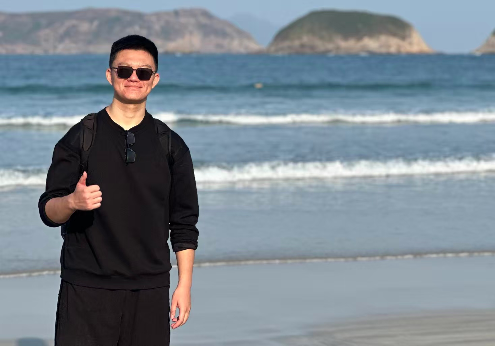
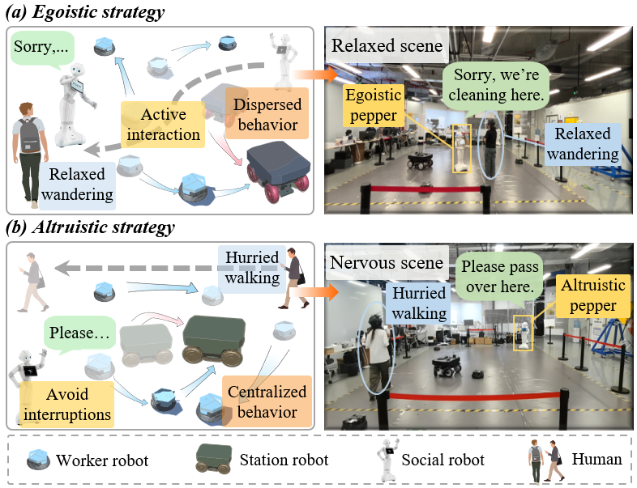

Haocheng (Rex) WangMaster Student
Chinese University of Hong Kong, Shenzhen
|
 |


Biography
I am a second-year master student at CUHKSZ, supervised by Yuan Gao. I obtained my Bachelor's Degree from Beihang University in 2024. I used to be an intern at Shenzhen AIRS Laboratory.
My research interests include Robotics, Reinforcement Learning, Embodied Navigation, and multi-robot collaboration. From 2022 to 2023, I focused on the bio-inspired underwater robotics research. From 2023 to 2024, I worked on spatial perception for autonomous driving. From 2024 to 2025, I have been working on heterogeneous robot collaboration.
I am currently seeking internship and Ph.D. opportunities in embodied navigation and related areas.
Please feel free to rearch out for potential collaboration
News
- [01/2026] One paper was accepted by ICRA 2026 .
- [06/2024] Graduated from Beihang University .
Internship
|
Shenzhen AIRS Lab Mar. 2025 - Feb. 2026, Shenzhen, China closely worked with Yuan Gao Topic: Heterogeneous Multi Robot Collaboration |
|
|
Unitree Sep. 2025 - Dec. 2025, NXROBO, ROS Intern, Shenzhen, China |
|
Education
|
Chinese University of Hong Kong, Shenzhen, China Master of Artificial Intelligence and Robotics Advisor: Prof. Yuan Gao Sep. 2024 - Jun. 2026 |
|
|
Beihang Univesity, China Bachelor of Automation Sep. 2020 - Jun. 2024
|
Selected Publications
|  |
Emergent Co-Adaptive Strategies in Heterogeneous Multi-Robot Systems via Meta-Learning ICRA 2026Haocheng Wang*, Tin Lun Lam, Jianwang Zhai, Xvchun He, Lin Wang, Yuan Gao |